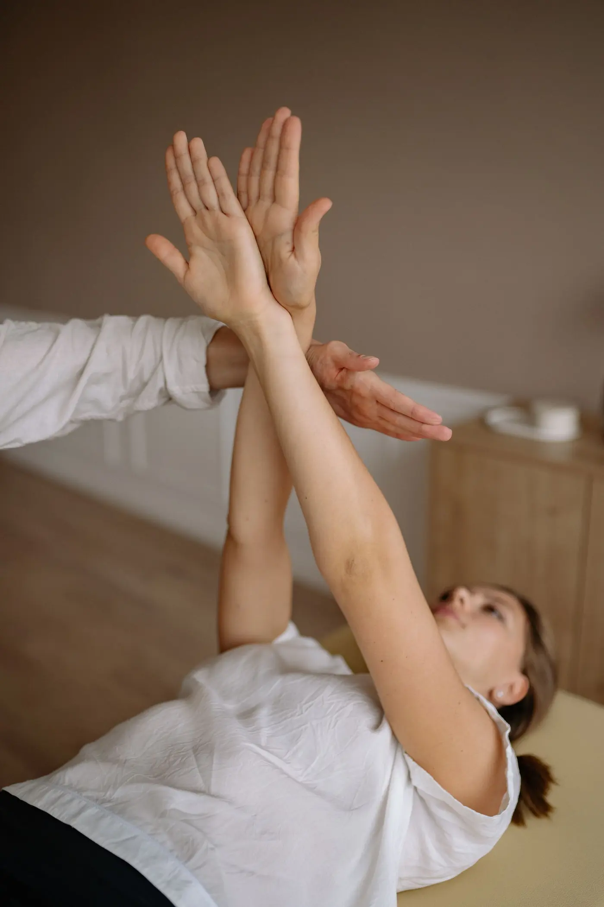
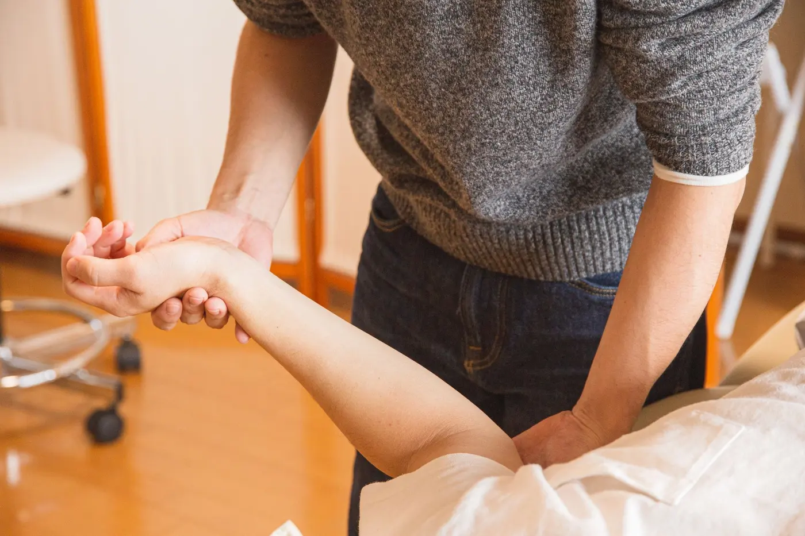
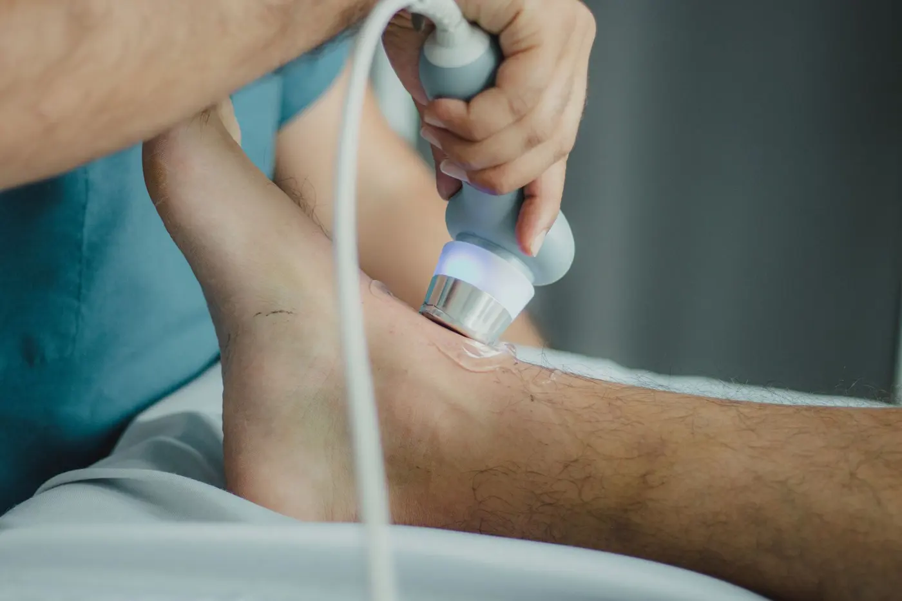

Leistungen
16 Behandlungsformen aus einer Hand — von Krankengymnastik bis Kiefergelenkstherapie.
Leistungen
16 Behandlungsformen aus einer Hand — von Krankengymnastik bis Kiefergelenkstherapie.
01
Manuelle Therapie & Krankengymnastik
Handgriffe und gezielte Bewegungsübungen zur Wiederherstellung von Gelenkfunktion, Beweglichkeit und Kraft – abgestimmt auf Ihr individuelles Beschwerdebild.
- Manuelle Therapie
- Krankengymnastik
- Arthromuskuläre Programmierung
- Atlasbehandlung
- Kiefergelenkstherapie (CMD)
- Nervenmobilisation
02
Massage & Lymphtherapie
Manuelle Verfahren zur Lockerung verspannter Muskulatur und zur Anregung des Lymphflusses – wohltuend und gezielt zugleich.
- Massagen
- Lymphdrainage und Ödemtherapie
- Triggerpunkt-Therapie
- Fuß- und Handreflexzonentherapie

03
Elektro- & physikalische Therapie
Apparative und physikalische Verfahren zur Schmerzlinderung und zur Unterstützung des Heilungsprozesses.
- Elektrotherapie
- Ultraschalltherapie
- Schlingentisch (Traktionsbehandlungen)
- Wärmebehandlung (Naturmoor, Rotlicht)

04
Sport & Taping
Gezielte Unterstützung für sportlich aktive Patientinnen und Patienten – von der Verletzungsbehandlung bis zum kinesiologischen Taping.
- Sportphysiotherapie
- Pain Relief Technique (kinesiologisches Taping)
Termin vereinbaren
07183 9246295Bitte vereinbaren Sie Ihren Termin telefonisch – so vermeiden Sie unnötige Wartezeiten.
Kontakt & Anfahrt